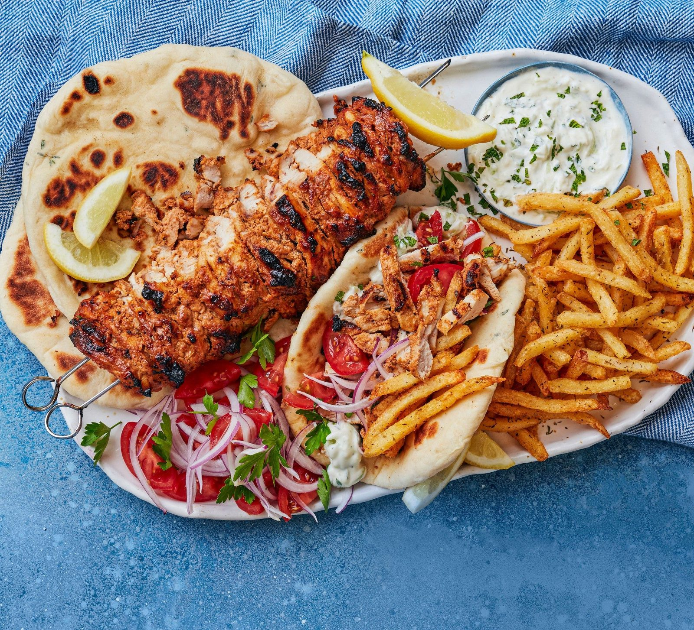

Chicken Gyros
Greek-style marinated chicken thighs packed onto skewers and cooked whole on the barbecue, then carved into warm pittas.

Before you start needs at least 1hr marinating, and up to 24hr.
Ingredients
For the chicken
For the marinade
To serve
Method
- Whisk the 500g Greek yoghurt, the juice of 2 lemons and the zest of ½, the 100ml olive oil, the 4 garlic cloves, the 1 tbsp ground coriander, the 1 tbsp ground cumin, the 1 tbsp sweet paprika, the 1 tsp dried oregano, the 1 tsp dried thyme, the 1 tsp cayenne pepper, the 1 tsp cracked black pepper and the ½ tsp ground cinnamon together with 1 tsp salt in a large bowl — or better still a large plastic container with a lid.
- Open out each of the 12 chicken thighs, cover with a piece of baking parchment and flatten it with your hand, then lift off the paper and cut the thigh in half.
- Tip the chicken into the marinade and mix so it is completely coated. Cover, chill and marinate for at least 1hr or up to 24hr — the longer, the better.
- Thread all the chicken onto two skewers, so both skewers go through each piece of meat, packing it down tightly as you go to make a compact kebab.
- Light a lidded barbecue and let the flames die down. Once the coals have turned ashen, pile them up on one side with a single layer of coals scattered around the other side.
- Lay the kebab on the side of the barbecue with only a few coals underneath. Put the lid down and cook for 45 minutes, turning every 15 minutes.
- Lift the lid and roll the kebab over to the hotter side to char the meat, turning it every few minutes until well browned and cooked through. Prise the pieces apart in the centre to check, or use a digital cooking thermometer — it should read 70°C or more.
- Leave to rest for 5-10 minutes while you warm the 6-8 pitta breads.
- Bring the kebab to the table and carve into thin slices with a serrated knife. Pile the meat into the warm pittas with the 2 red onions, the 4 tomatoes and the tzatziki.
Notes
- Marinate for as long as you can, ideally overnight or a full 24 hours. The lemon, herbs, spices and yoghurt tenderise the meat and give it far more flavour.
- Threading the chicken onto two skewers at once is fiddly. Start and finish with something solid — half an onion, or a thick slice of potato — to hold the skewers in place.
- No barbecue: heat the oven to 200°C fan and sit the kebab across a roasting tin so it is suspended, or rest a wire rack over a roasting tin and put the chicken on top. Cook for 45-55 minutes, until cooked through.
- Chips alongside are part of the original serving suggestion.
- Leftovers: toss any remaining red onion, tomato and shredded chicken through cold cooked pasta with some feta, a drizzle of olive oil and a squeeze of lemon.
Source: https://www.bbcgoodfood.com/recipes/big-barbecue-chicken-kebab